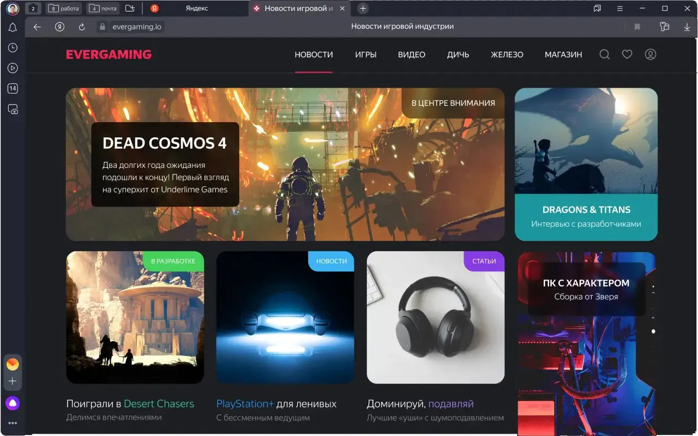

Что такое Яндекс Браузер
Яндекс Браузер — это современный интернет-обозреватель, разработанный компанией Яндекс. Программа предназначена для комфортного и безопасного просмотра сайтов, работы с онлайн-сервисами и загрузки файлов. Браузер работает на движке Chromium, поэтому поддерживает большинство расширений и стандартов, используемых в Google Chrome и других популярных решениях.